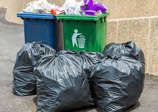
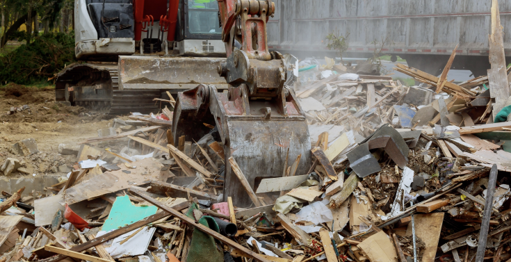

WHAT IS IMOTOTO ALL ABOUT?
IMOTOTO is a forward thinking environmental service provider established in 2023 by a couple of youths whose zeal is to make waste disposal quite easy,less strenuous and to reduce the number of Dumpsites in Ekiti State thereby, preventing all forms of pollution and drastically reducing the amounts of blocked drainage system.
We has presence in the entire waste management vertical from collection, solid and hazardous waste landfill management, transfer, recycling and resource recovery to disposal..The Team is equipped with the expertise and resources required to provide long-term solutions to the waste management challenges in Ekiti State.
WHAT DO WE DO?

✅Residential / Commercial Services
Our company provides prompt and effective waste collection and disposal services to residential apartments, hotels, restaurants, banks, lock-up shops and offices in Ado Ekiti and other towns in Ekiti State.
✅Recycling
IMOTOTO is currently investing in recyclable materials such as Plastic, Paper, Card boards, Steel, Aluminum, Drink Cans and Food wastes from EKSWMA Waste Transfer Station facility and you get a discount each time you recycle with us when next you need to dump your waste at IMOTOTO. The long term focus of our recycling initiatives is aimed at leading the global way in the 3 R’s: Reduce, Reuse, Recycle.

✅Industrial Services
We provide waste collection and waste disposal services to industries, construction and demolition sites, shopping malls and markets in towns like Oye, Ikere, Ijero and the State Capital, Ado Ekiti.
We make use of specialized modern waste collection equipment such as Roll-On-Roll-Off and Skip-Bin for collection and disposal of construction/demolition wastes as well as other specialized waste

✅Dumpster Sales and Rental
We also specialize in importation and supply of waste management equipment and trucks to Nigeria. IMOTOTO has imported various trucks and supplied to waste management agencies within and outside Ekiti.